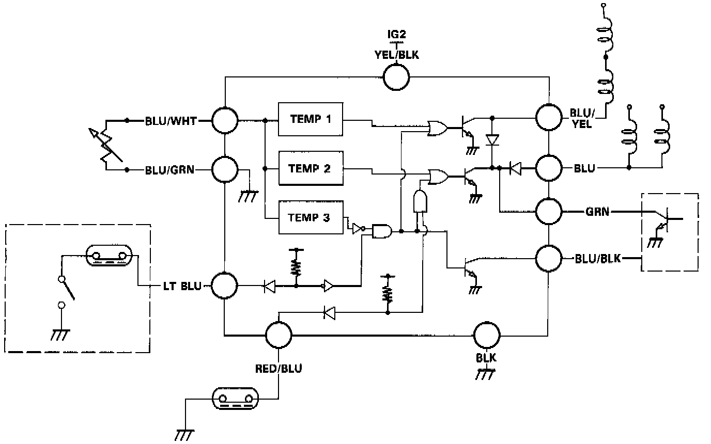
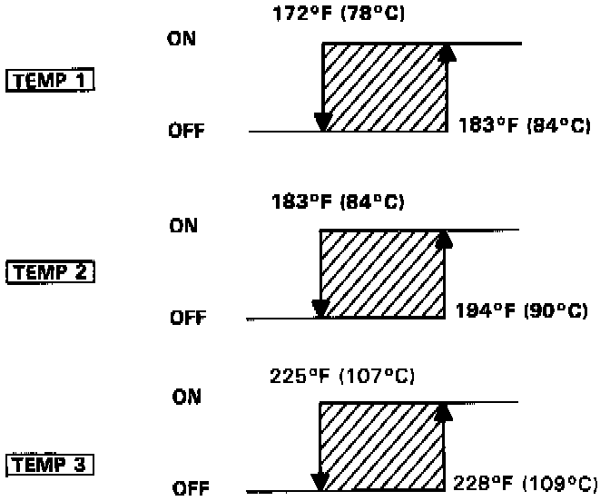

Control Module HVAC: Description and Operation

FAN CONTROL UNIT OPERATION
The fan control unit makes calculations based on signals from the water temperature sensor. It then controls the operation of the radiator fan, condenser fan and A/C system.

TEMP 1:
When radiator coolant temperature is above 183°F (84°C), the control unit turns Tr1 ON then the radiator fan (Lo) and condenser fan runs (Lo).
TEMP 2:
When radiator coolant temperature is above 194°F (90°C), the control unit turns Tr2 ON then the radiator fan (Hi) runs, and the condenser fan (Hi) goes on.
TEMP 3:
When radiator coolant temperature is above 268°F (109°C), the control unit turns Tr3 OFF then stops the A/C compressor.